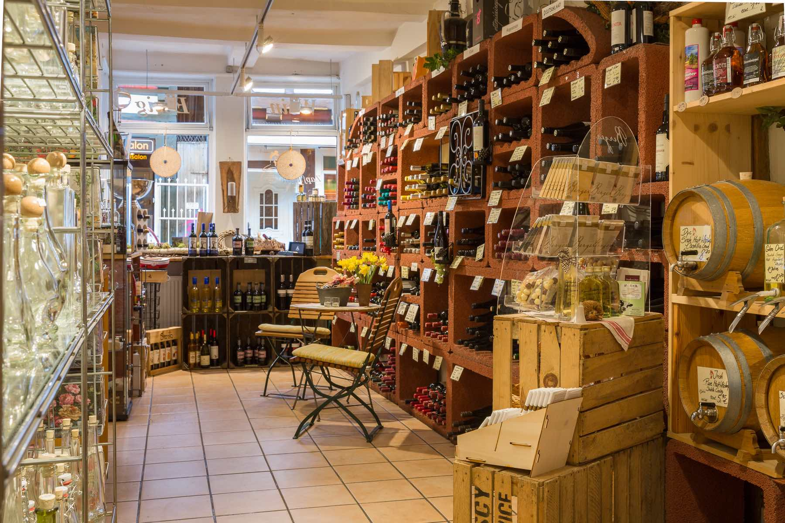
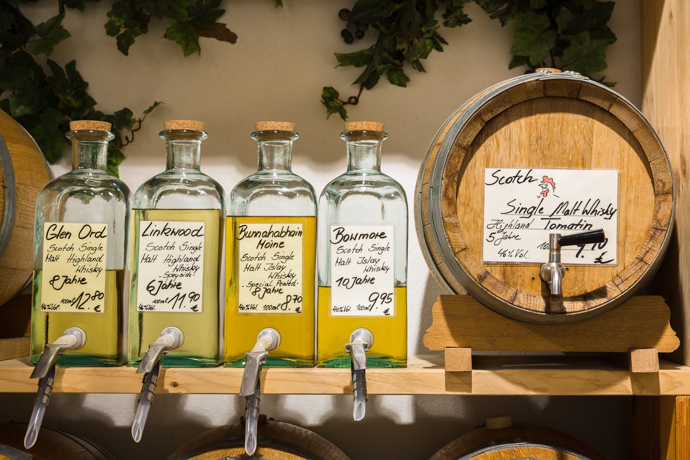
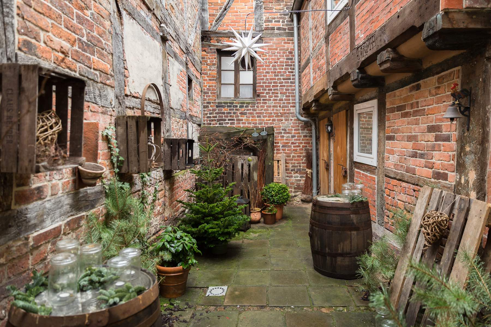
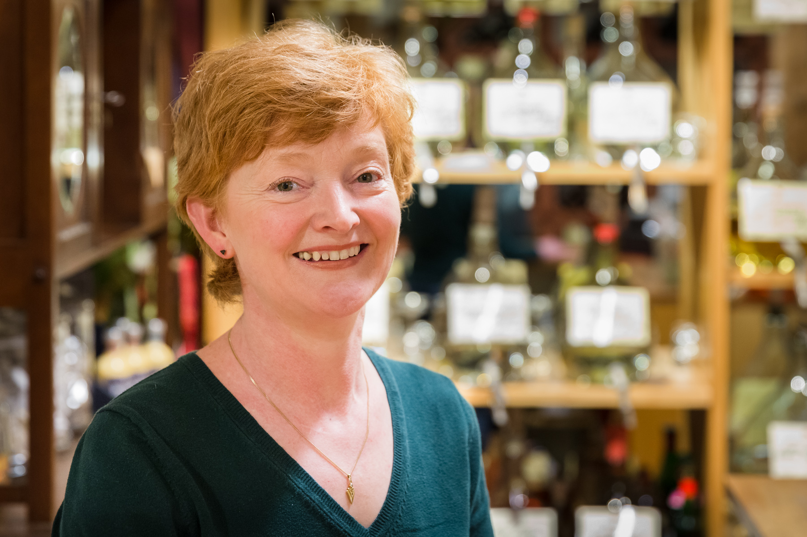

Weine aus aller Welt, feine Öle und Essige und charismatische Whiskeys und Gins - Wir führen ein breites Sortiment an Artikeln die einem feinem Gaumen schmeicheln.
Genuss mit Tradition
Wir freuen uns dieses Jahr unser 25-jähriges Jubiläum mit Ihnen feiern zu dürfen.

Viele Produkte füllen wir direkt vom Glasballon oder Eichenfass ab. Vom schlichten Flacon bis hochwertigsten italienischen mundgeblasenen Flaschen bieten wir ein breites Sortiment um den hochwertigen Inhalten eine würdevolle Umgebung zu bieten.

Wir laden Sie ein in unserem historischen Innenhof unsere Weine zu verkosten. Passend dazu bieten wir eine Auswahl feiner spanischer Tapas.


Wir freuen uns Sie bei uns begrüßen zu dürfen.
Petra Kriegerowski
Firmenfeiern und besondere Anlässe
Für Gruppen bis zu 10 Personen bieten wir Gin-, Whisky- und Weinverkostungen in einem abendfüllenden Programm an.
Schreiben Sie uns gerne.
Öffnungszeiten
| Montag - Freitag | 10:00 - 18:00 |
| Samstag | 10:00 - 16:00 |
Kontakt
Neue Straße 35 | 14197 Celle